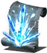
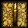

Informacion general
Los hechizos se lanzan a través de catalizadores. Los catalizadores escalan con la estadística Inteligencia, aunque existe una excepción: Catalizador latón Luna Oscura. La mayoría de hechizos pueden ser adquiridos a través de varios de los mercaderes en el juego. Algunos se encuentran como botín. En el juego hay más hechizos que milagros y piromancias. Mientras que las piromancias se enfocan en magias ofensivas y los milagros en magias defensivas, los hechizos incluyen una variedad de magias de utilidad y aumentos, así como una serie de magias ofensivas. Todas las formas de hechizos ofensivos producen daño mágico, lo cual es muy efectivo contra armaduras de hierro, escamas, y otros materiales resistentes.
Lore
Se dice que los hechizos tienen su origen en Seath el Descamado, el "abuelo de la brujería". La antigua tierra de Oolacile posee sus propios hechizos, los cuales son una "aproximación" a los hechizos modernos, y se caracterizan por aumentar el arma o cuerpo, en lugar de causar daño. Manus, Padre del Abismo es la fuente de al menos un hechizo del Abismo. Se dice que los hechizos del Abismo fueron descubiertos por un hechicero de Oolacile al borde de la locura, posiblemente Gilleah el Brujo. Estos hechizos difieren de los demás hechizos normales, los cuales derivan de las almas, ya que los hechizos oscuros extraen su poder a través de la humanidad, además de causar daño mágico y físico debido a su naturaleza "pesada". Sombrero Grande Logan de la Escuela de Dragones de Vinheim jugó un papel importante en el desarrollo de numerosos hechizos. Durante su encaprichamiento con Seath el Descamado en Los Archivos del duque, Logan desarrolló nuevos hechizos y mejoró los que ya existían.
Aliento de dragon
Ocupa una ranura, =50
Descripcion
Hechizo desarrollado por Logan cuando se encaprichó de Seath el Descamado. Emite aliento cristal de Seath el Descamado. No causa maldiciones, pero ¿qué locura impulsó a Sombrero Grande a apropiarse del temible poder de los dragones ancestrales?.
Obtencion
Lo suelta Sombrero Grande Logan en Los Archivos del duque, en la zona en la que el jugador encuentra a Seath el Descamado por primera vez. El jugador debió liberar a Logan de su celda y haber derrotado a Seath el Descamado en la Cueva de cristal.